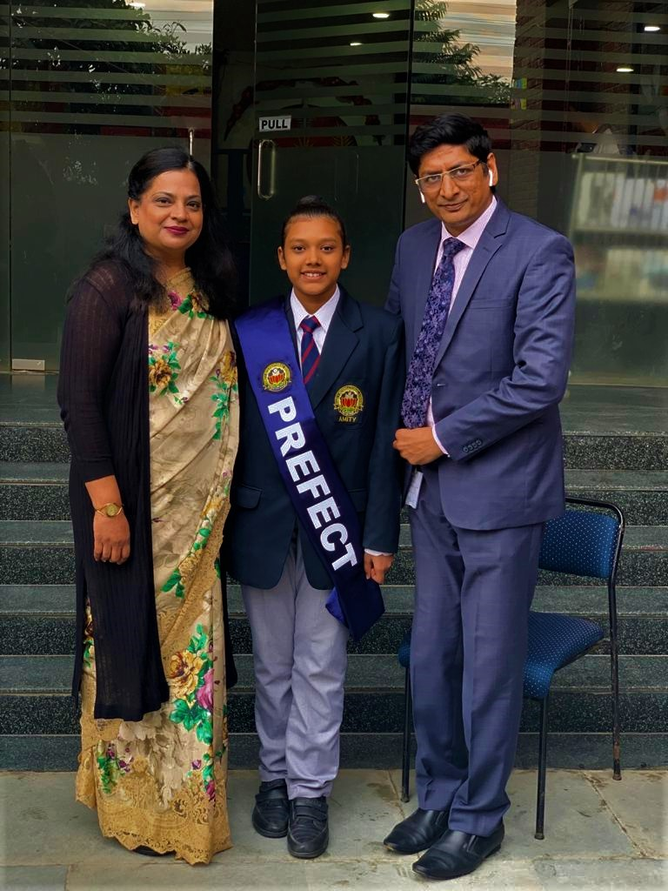
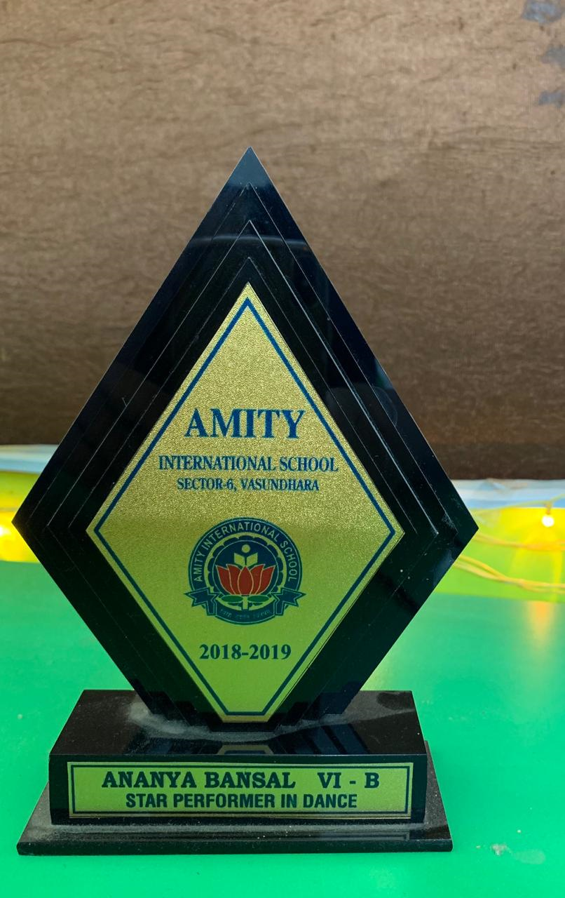
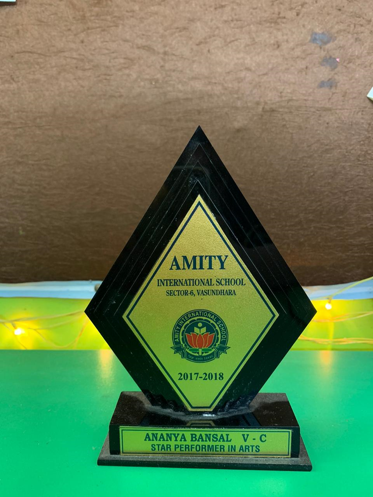
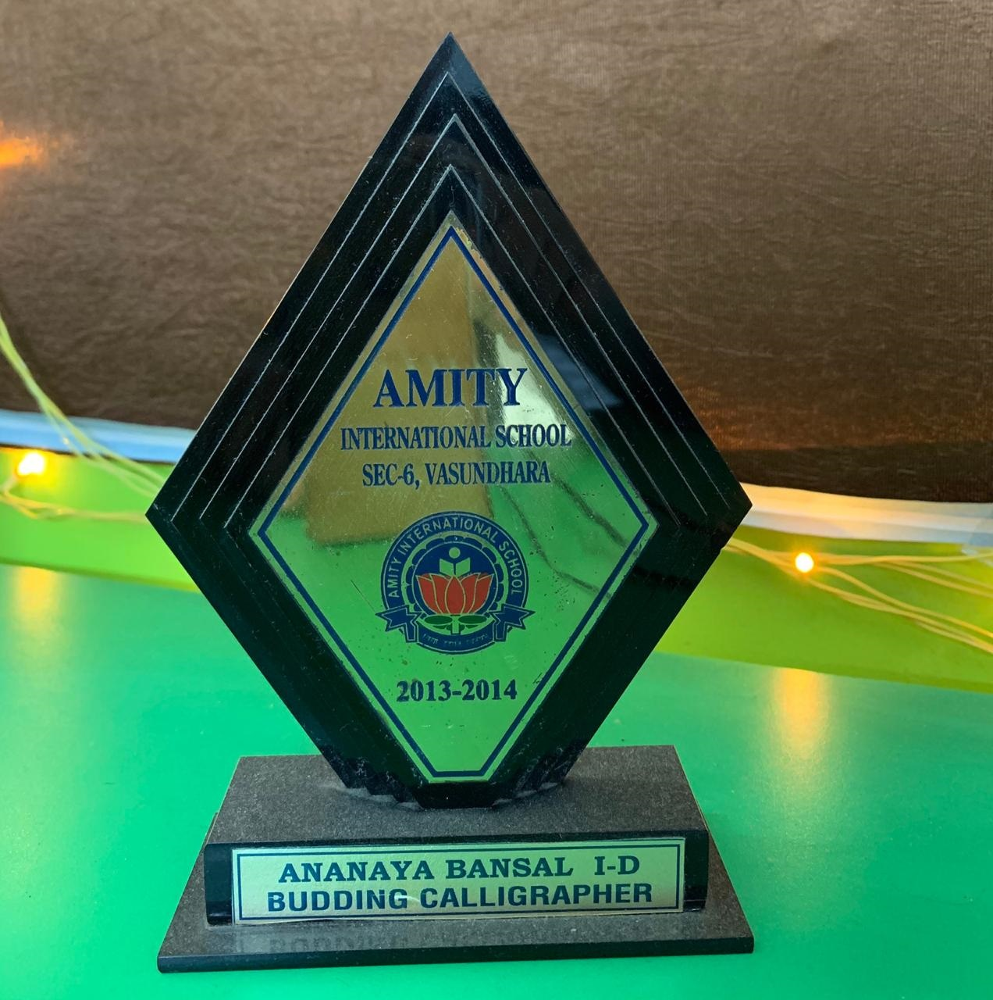
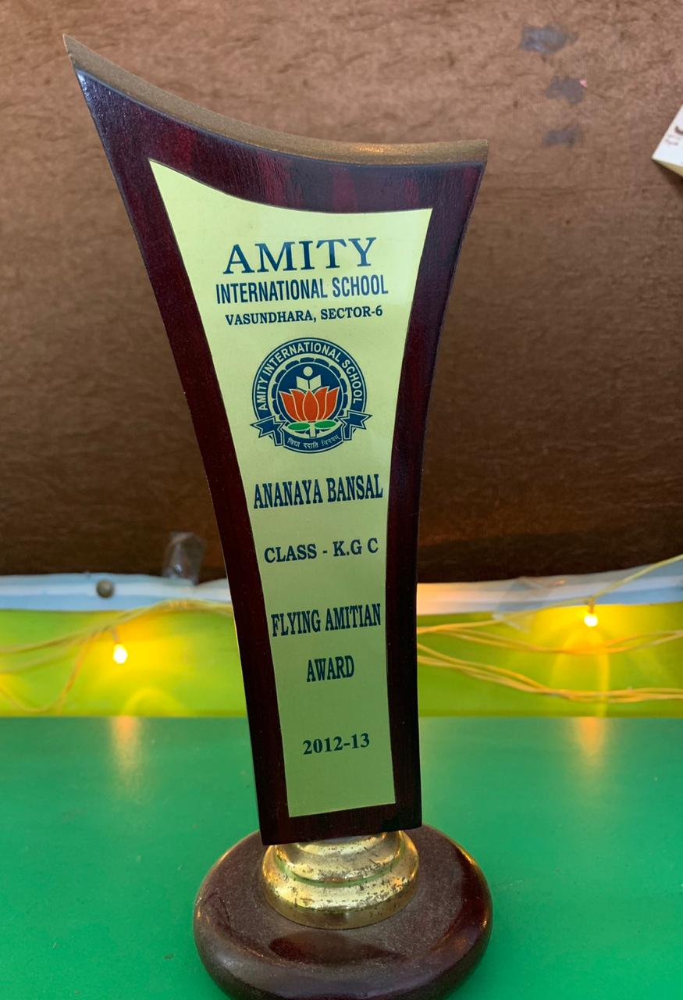

|
ANANAYA BANSALClass VIII DAmity International School, Sector-6, Vasundhara, GhaziabadA6, 501 , Olive County,Sec-5,Vasundhara,Ghaziabadananaya2507@gmail.com |
| Date of Birth | 25th July, 2007 |
| Language Known | English, Hindhi, Japanese |
| Father's Name | Dr. Abhay Bansal |
|

Selected for PREFECT COUNCIL  |
| Awarded for Star Performer in Dance ! |
|  |
| awarded for star performer in arts ! |
|  |
| Ananaya Bansal awarded for building calligrapher! |
|  |
| flying amitian award |